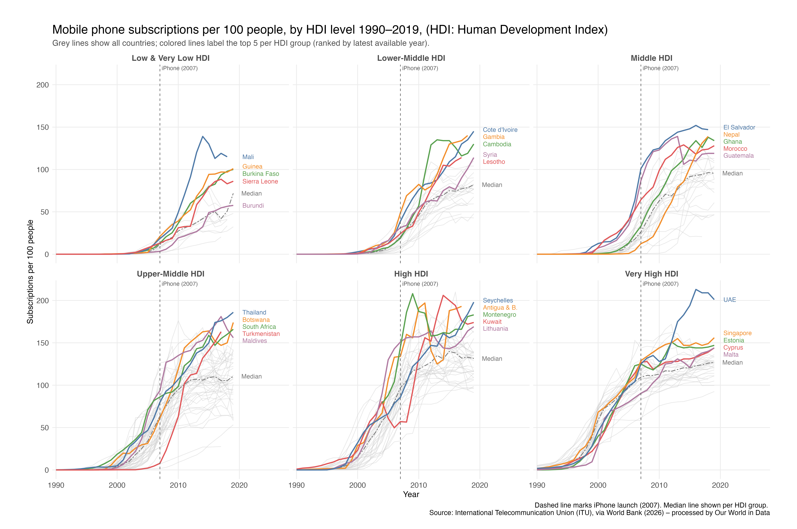
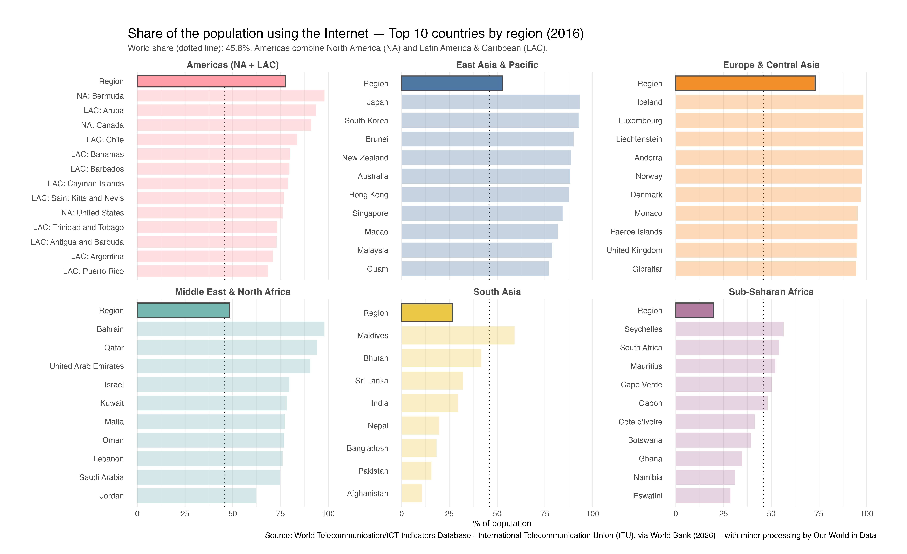

Mobile Adoption Across Human Development Levels
An R visualization exploring how mobile phone adoption evolved across HDI groups from 1990 to 2019.

Question
How did the timing and scale of mobile phone adoption differ across countries at different levels of human development?
Key Findings
- Mobile adoption accelerated across all HDI groups during the 2000s, but higher-HDI countries reached widespread adoption earlier.
- By the 2010s, median subscriptions exceeded 100 per 100 people in the upper-middle, high, and very high HDI groups.
- Differences between development groups narrowed over time, although lower-HDI countries continued to show lower adoption levels.
Visualization Design
- Countries were divided into six HDI groups to support comparisons between similar development levels.
- All countries appear in grey to preserve the overall distribution.
- The five highest-ranked countries in each group are highlighted and directly labeled.
- Group medians provide a more stable reference than individual country trajectories.
- The 2007 iPhone launch is included as a contextual reference rather than as a causal claim.
Internet Use Across World Regions
Top-performing countries and regional benchmarks in 2016.

Question
How did Internet adoption among the leading countries in each region compare with regional and global levels?
Key Findings
- Europe and Central Asia and East Asia and Pacific contained many countries with Internet use above 80%.
- Leading countries in most regions exceeded the global average of 45.8%.
- South Asia and Sub-Saharan Africa showed considerably lower regional adoption, even when some individual countries performed substantially better.
Visualization Design
- Separate panels prevent countries from regions with lower adoption from disappearing within a single global ranking.
- The dotted line creates a consistent global benchmark.
- The darker regional bar distinguishes the aggregate from the country rankings.
- Countries are ordered within each region to support rapid comparison.